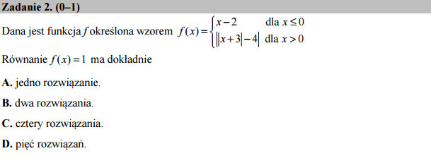

Pomocna ręka wykresu¶
Zadanie to można rozwiązać rysując wykres powyższych
funkcji. Narysowanie wykresu może też być pomocne w sprawdzeniu
rozwiązania. SageMath mamy do dyspozycji funkcję pozwalającą zapisać
i operawać na funkcjach określonych na przedziałach:
piecewise.
Przedziały domknięte i otwarte a funkcja piecewise
Zwróćmy uwagę, że korzystając z funkcji code:piecewise możemy
podać przedział otwarty (1,2) lub domknięty
[1,2]. Jednak przedział jednostronnie domknięty,
np. (1,2] stanowił by zapis niepoprawny z punktu widzenia
języka Python. Dlatego w takim przypadku należy zastosować
konstuktor RealSet.open_closed(1,2).